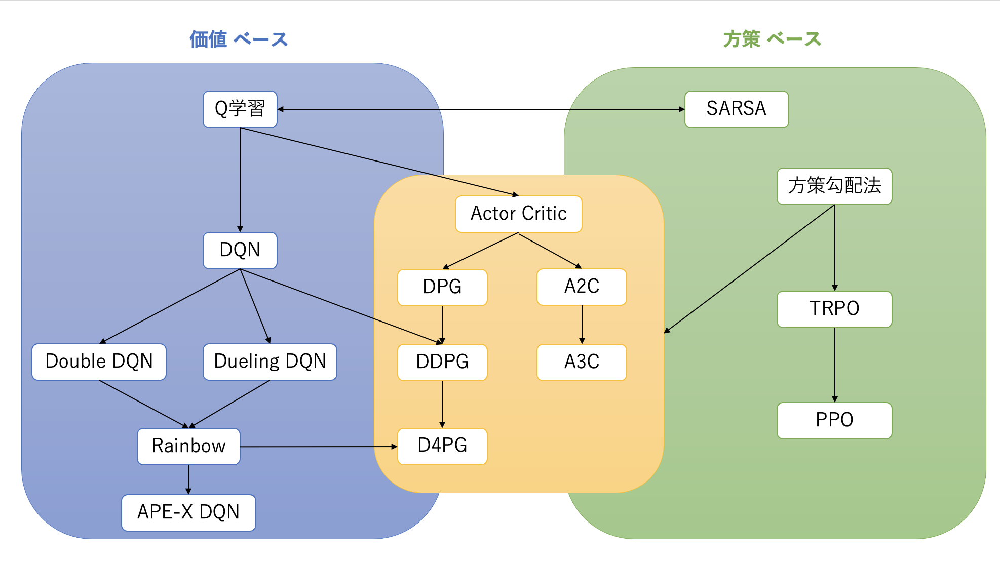

DNNを利用した強化学習の仲間たち

Actor Critic系
Asynchronous Advantage Actor Critic(A3C)
A3CはA2Cと同様に分散環境を使用するが，各環境のエージェントはそこで経験を収集するだけでなく学習も行う．これがAsynchronousな学習である．
Asynchronousな学習をしなくても十分な精度が出るためA2Cが生まれた．
Experience Replyでは，大きなバッファを用意して多様性を担保にしていたが，ぶんさん収集では別々の環境における経験を集めることで多様性を担保する．
Deep Deterministic Policy Gradient(DDPG)
Experience Replyを用いたActor-Criticの手法．行動を行動確率の分布からサンプリングするのではなく，行動を直接出力する，また，学習に関してはAdvantageではなく，TD誤差を用いる．
Deterministic Policy Gradient(DPG)
行動が確率的ではなく，価値ベースのようにベストな行動が決定的に選択されるという前提をおいた手法である．
方策勾配系
Trust Region Policy Optimization(TRPO)
方策勾配系の手法は実験結果が安定しない場合がある．この点を改善する手法がいくつか提案されている． その一つが，更新前の方策から大きく離れないように制約をかける方法である．
$$\mathbb{E}[KL[\pi_{\theta_{old}}(･|s_t),\pi_\theta(･|s_t)]] \leq \delta$$
更新前の行動分布$\pi_{\theta_{old}}(･|s_t)$と更新後の行動分布$\pi_\theta(･|s_t)$の分布間の距離KLダイバージェンスが$\delta$以下になるように制約をかけ，制約の下でAdvantageが大きくなるように更新する．
Advantageには更新の前後の変化に応じて重み($\frac{\pi_\theta(･|s_t)}{\pi_{\theta_{old}}(･|s_t)}$)がかけられる．
$$\max_\theta \mathbb{E}[\frac{\pi_\theta(･|s_t)}{\pi_{\theta_{old}}(･|s_t)}A_t]$$
TRPOにおける距離の制約は，目的関数の中に組み込むことが可能である．
$$r_t(\theta) = \mathbb{E}[\frac{\pi_\theta(･|s_t)}{\pi_{\theta_{old}}(･|s_t)}A_t - \beta KL[\pi_{\theta_{old}}(･|s_t),\pi_\theta(･|s_t)]]$$
Proximal Policy Optimization(PPO)
TRPOの距離制約を含んだ目的関数$r_t(\theta)$において，更新前後の分布が前後完全に一致した場合1となる.
$r_t(\theta)$が1から大きく離れる場合，一定の上限値で制限する．以下の式では，$r_t(\theta)$を$1-\epsilon$から$1+\epsilon$の範囲に制限している．
$$clip(r_t(\theta),1-\epsilon,1+\epsilon)A_t$$
この制約を目的関数に組み込んだ手法がProximal Policy Optimization(PPO)である．
参考
久保隆宏,"Pythonで学ぶ強化学習 入門から実践まで"